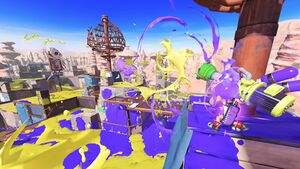

Splatoon 3 Gameplay
Splatoon 3 is a team-based third person shooter, releasing on September 9th, 2022. Players can choose to be an Inkling or Octoling, evolved cephalopod beings who can switch between swim and humanoid form, and use ink-based weapons (ranging from run-of-the-mill Shooters to gigantic Rollers) to paint the ground for maneuverability. In the regular game mode "Turf War", two teams of four battle to cover the map with their ink colour, and the side with the largest percentage coverage wins the match.
Aside from Turf War, the ranked matchmaking offers four modes, one of which is in rotation every two hours: Splat Zones, taking control of a specific area and controlling it; Rainmaker, carrying a heavy trophy to the enemy base; Tower Control, pushing the tower to the goal located at the enemy base; Clam Blitz, a race to see which team can fill the clam basket the fastest. Every month, a Splatfest occurs, and players join teams representing answers to a question. During the two-day event, Turf Wars are held to contribute to the team overall. After the halftime announcement, the leading team is selected as the defender, and the other two teams as attackers in the brand new Tri-Colour Battle, a three-way fight for map domination.
Players can also customize their Inkling / Octoling avatar via clothes and accessories: One can choose to a fisher via a beach straw hat, utility vest and trail boots, while another can dress up as a knight in shining armour. Clothes also serve a dual purpose of boosting abilities and stats, such as swimming faster or refilling ink faster. Main slots can equip unique abilities, including Comeback, a boost in abilities after respawning, Object Shredder to destroy deployables faster, and Last Ditch Effort, a temporary upgrade to stats when on the losing side.
Date
Splatfest
Winner
8/27/2022
Rock, Paper, Scissors?
Rock
9/23/2022
Gear, Grub, Fun?
Gear
11/12/2022
Grass, Fire, Water?
TBA
BONELAB, a further expansion on the capabilities of VR
Published by Leo Yuen, October 14th, 2022
BONELAB Graphics Demo
BONELAB is a virtual reality singleplayer game, released on September 28th, 2022 on the Oculus Store and PCVR platforms. Players find themselves in the middle of a sticky situation with an angry mob, and a divine intervention allows the player to escape, followed by exploring an underground dungeon, eventually arriving to the game’s hub after the elevator they were in crashed through the roof of the liminal space.
BONELAB, like its predecessor BONEWORKS, placed an emphasis on realistic physics. For example, object handling is dependent on whether the player is holding it with both hands or only one. Lighter objects, such as a knife, can be held with one hand and used as such. Heavier objects, however, require both hands to function effectively. If a claymore is held by a single hand, it will flail around, and swings are significantly less effective against the recipient.
Avatars are a new mechanic introduced in BONELAB: Halfway through the game, the player gains access to the Bodylog, a device capable of changing the body of the player to other avatars. For example, the heavy avatar can pick up and throw objects easily, while the fast avatar can traverse areas easily. Avatar types also have different stats, including movement speed, body strength, and height affecting gameplay in different ways.